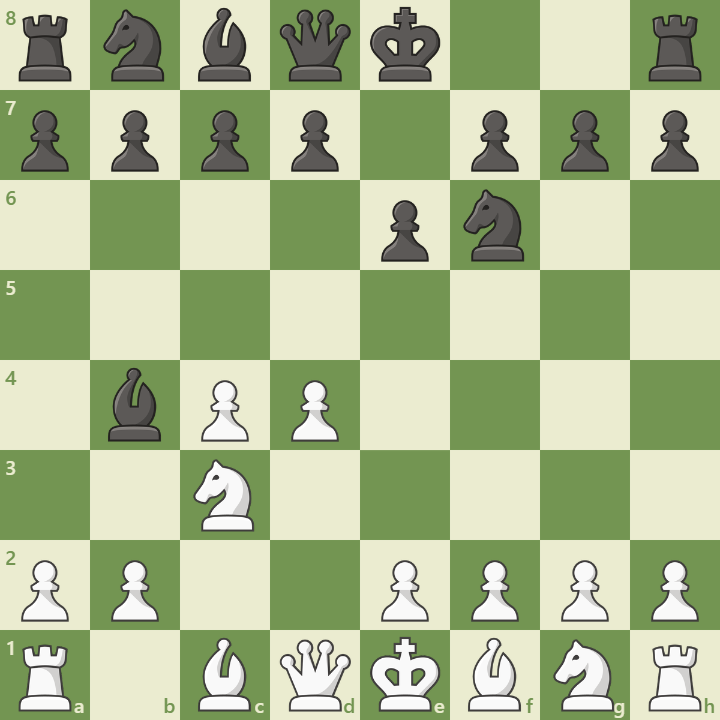

Opening Diagram

Position after 1.d4 Nf6 2.c4 e6 3.Nc3 Bb4
Overview
The Nimzo-Indian Defense is a hypermodern response to 1.d4, introduced by Aron Nimzowitsch. After 1.d4 Nf6 2.c4 e6 3.Nc3 Bb4, Black immediately challenges White’s center and plans to double White’s c-pawns. It’s a favorite of positional masters and offers rich strategic complexity.
Main Ideas
- Pin and pressure: The bishop on b4 pins the knight and targets e4 indirectly.
- Pawn structure: Black often aims to provoke doubled c-pawns and then attack them.
- Flexibility: Black can castle early and choose between ...c5, ...d5, or ...b6 setups.
- White’s plans: White may play Qc2, e3, a3, or f3 depending on the variation.
Popular Variations
- Classical Variation: 4.Qc2 — avoids doubled pawns
- Rubinstein System: 4.e3 — solid and flexible
- Kasparov Variation: 4.Nf3 — delays decision on e3/Qc2
- 4.a3: Forces bishop exchange and accepts doubled pawns
Model Game: Carlsen vs Aronian
In this elite clash, Carlsen used the Rubinstein System to build a strong center and outmaneuver Aronian in a complex middlegame. The game highlights the strategic depth of the Nimzo-Indian.
View annotated game